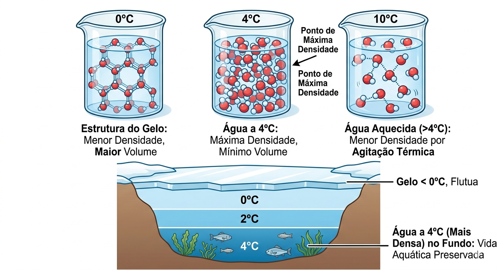
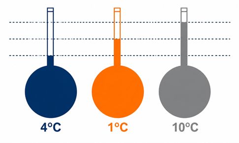
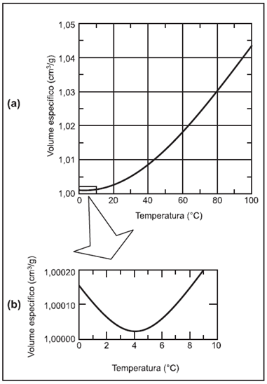

2º Ano | Aula 03: Termologia - Dilatação de Líquidos e Água
📚 Resumo:
Os líquidos não possuem forma própria, portanto, sua dilatação é sempre volumétrica. Como os líquidos devem estar contidos em recipientes (sólidos), quando o sistema é aquecido, ambos dilatam.
A dilatação que observamos (o líquido que transborda) é chamada de Dilatação Aparente. A dilatação real do líquido é a soma da dilatação aparente com a dilatação do recipiente.
Além disso, a água apresenta um comportamento anômalo entre $0^\circ C$ e $4^\circ C$, onde ela contrai ao ser aquecida.
📖 1. Dilatação Real vs. Aparente
Ao aquecer um frasco completamente cheio de líquido, o frasco aumenta de volume e o líquido também. O volume de líquido que transborda não é toda a dilatação do líquido, mas apenas a parte que "sobrou" do novo volume do frasco.
A maioria das substâncias dilata ao ser aquecida. No entanto, entre $0^\circ C$ e $4^\circ C$, a água diminui de volume (contrai) ao ser aquecida. Isso ocorre devido ao rearranjo das pontes de hidrogênio.

Figura 2: Comportamento anômalo da água.
A $4^\circ C$: A água atinge seu volume mínimo e sua densidade máxima.
Consequência: Isso permite que lagos congelem apenas na superfície, mantendo a água líquida a $4^\circ C$ no fundo, preservando a vida aquática.
💡 Física em Ação
⛽ Tanques de Combustível
Ao abastecer um carro, o combustível costuma estar gelado no tanque subterrâneo. Se o carro ficar no sol, o combustível dilata. Por isso, os tanques possuem sistemas de respiro para evitar vazamentos por dilatação.
❄️ Vida nos Polos
Graças à anomalia da água, o gelo (menos denso) flutua e isola termicamente a água abaixo dele, que permanece a $4^\circ C$, permitindo que peixes sobrevivam em invernos rigorosos.
✅ 5 Questões Resolvidas (R 1 a 5)
R 1: Dilatação Aparente
Enunciado: Um recipiente de vidro de volume $500\text{ cm}^3$ está cheio de mercúrio. Ao aquecer o sistema, transbordam $8\text{ cm}^3$. Qual a dilatação aparente do mercúrio?
Resolução: A dilatação aparente é exatamente o volume que transborda do recipiente que estava inicialmente cheio. Logo, $\Delta V_{ap} = \mathbf{8\text{ cm}^3}$.
R 2: Cálculo da Dilatação Real
Enunciado: Um frasco de vidro ($\gamma_{vidro} = 2,7 \cdot 10^{-5} \, ^\circ C^{-1}$) de $1000\text{ cm}^3$ está cheio de um líquido. Ao aquecer em $100^\circ C$, a dilatação aparente é de $15\text{ cm}^3$. Qual a dilatação real do líquido?
Enunciado: O coeficiente de dilatação aparente de um líquido em um frasco de alumínio ($\gamma_{Al} = 7,2 \cdot 10^{-5} \, ^\circ C^{-1}$) é $12 \cdot 10^{-5} \, ^\circ C^{-1}$. Qual o coeficiente de dilatação real do líquido?
Enunciado: O que acontece com a densidade de uma massa de água ao ser aquecida de $1^\circ C$ para $4^\circ C$?
Resolução: Nesse intervalo, a água sofre contração (volume diminui). Como $d = m/V$, se o volume diminui para a mesma massa, a densidade aumenta, atingindo seu máximo em $4^\circ C$.
R 5: Transbordamento Nulo
Enunciado: É possível aquecer um sistema frasco+líquido e não haver transbordamento? Explique.
Resolução: Sim, se o coeficiente de dilatação do frasco for igual ao coeficiente de dilatação real do líquido ($\gamma_{frasco} = \gamma_{real}$), ambos dilatarão na mesma proporção e o nível permanecerá o mesmo.
✍️ 5 Questões Propostas (P 6 a 10)
P 6: Conceito de Aparente
Enunciado: Por que a dilatação aparente de um líquido é sempre menor que a sua dilatação real (considerando frascos comuns que dilatam com o calor)?
Resolução: Porque parte da dilatação real do líquido é "utilizada" para preencher o novo volume aumentado do recipiente. O que vemos transbordar é apenas o excedente.
P 7: Água a $2^\circ C$
Enunciado: Uma garrafa de vidro completamente cheia de água a $4^\circ C$ é resfriada até $2^\circ C$. A água transbordará? Considere a dilatação do vidro desprezível.
Resolução:Sim. Ao resfriar de $4^\circ C$ para $2^\circ C$, a água dilata (comportamento anômalo). Como o frasco não muda de tamanho e a água aumenta de volume, ela transbordará.
P 8: Cálculo de Volume Transbordado
Enunciado: Um frasco de vidro de $200\text{ cm}^3$ está cheio de glicerina ($\gamma = 5,0 \cdot 10^{-4} \, ^\circ C^{-1}$). Se o vidro não dilata, quanto transborda ao aquecer em $50^\circ C$?
Resolução: Devido à anomalia da água, ao congelar ($0^\circ C$), seu volume aumenta bruscamente. Isso faz com que sua densidade se torne menor que a da água líquida, permitindo a flutuação.
P 10: Coeficiente Negativo?
Enunciado: O que significa dizer que o coeficiente de dilatação da água entre $0$ e $4^\circ C$ é negativo?
Resolução: Matematicamente, indica que o aumento de temperatura ($\Delta T > 0$) gera uma redução de volume ($\Delta V < 0$), caracterizando a contração térmica.
🎓 TESTES (T 11 a 15)
T 11: (Unimep-SP) Dilatação de Líquidos
Quando um frasco completamente cheio de líquido é aquecido, verifica-se um certo volume de líquido transbordado. Esse volume mede:
A) a dilatação absoluta do líquido menos a do frasco.
B) a dilatação do frasco.
C) a dilatação absoluta do líquido.
D) a dilatação aparente do frasco.
E) a dilatação do frasco mais a do líquido.
Resolução: Alternativa A.
O volume que transborda é chamado de dilatação aparente ($\Delta V_{ap}$). Ele representa a diferença entre o quanto o líquido realmente aumentou de volume (dilatação absoluta) e o quanto o recipiente "cresceu" para acomodá-lo (dilatação do frasco).
$$ \begin{aligned}
\Delta V_{real} &= \Delta V_{frasco} + \Delta V_{aparente} \\
\text{Logo,} \\
\Delta V_{aparente} &= \Delta V_{real} - \Delta V_{frasco}
\end{aligned} $$
Portanto, o volume transbordado mede a dilatação absoluta do líquido menos a dilatação do frasco.
T 12: (UFU-MG) Dilatação de Recipientes
Um frasco de capacidade para $10\text{ litros}$ está completamente cheio de glicerina a $10\text{ °C}$. Aquecendo-se o conjunto até $90\text{ °C}$, transbordam $352\text{ ml}$ de glicerina. Sabendo que o coeficiente de dilatação volumétrica da glicerina é $5,0 \cdot 10^{-4}\text{ °C}^{-1}$, o coeficiente de dilatação linear do frasco é:
A) $6,0 \cdot 10^{-5}\text{ °C}^{-1}$
B) $2,0 \cdot 10^{-5}\text{ °C}^{-1}$
C) $4,4 \cdot 10^{-4}\text{ °C}^{-1}$
D) $1,5 \cdot 10^{-4}\text{ °C}^{-1}$
E) $3,0 \cdot 10^{-4}\text{ °C}^{-1}$
Durante uma ação de fiscalização em postos de combustíveis, foi encontrado um mecanismo inusitado para enganar o consumidor. Durante o inverno, o responsável por um posto de combustível compra álcool por R\$ 0,50/litro, a uma temperatura de 5 °C. Para revender o líquido aos motoristas, instalou um mecanismo na bomba de combustível para aquecê-lo, para que atinja a temperatura de 35 °C, sendo o litro de álcool revendido a R\$ 1,60. Diariamente o posto compra 20 mil litros de álcool a 5 °C e os revende.
Com relação à situação hipotética descrita no texto e dado que o coeficiente de dilatação volumétrica do álcool é de \( 1 \cdot 10^{-3}\, ^\circ\mathrm{C}^{-1} \)S, desprezando-se o custo da energia gasta no aquecimento do combustível, o ganho financeiro que o dono do posto teria obtido devido ao aquecimento do álcool após uma semana de vendas estaria entre
A) R\$ 500,00 e R\$ 1.000,00.
B) R\$ 1.050,00 e R\$ 1.250,00.
C) R\$ 4.000,00 e R\$ 5.000,00.
D) R\$ 6.000,00 e R\$ 6.900,00.
E) R\$ 7.000,00 e R\$ 7.950,00.
Resolução: Alternativa D.
O ganho extra vem do volume dilatado ($\Delta V$) que o dono do posto não pagou, mas vendeu pelo preço de revenda ($R\$\,1,60$).
$$ \begin{aligned}
\text{1. Variação de temperatura (} \Delta \theta \text{):} \\
\Delta \theta &= 35 - 5 = 30\text{ °C} \\
\\
\text{2. Dilatação volumétrica diária (} \Delta V \text{):} \\
\Delta V &= V_0 \cdot \gamma \cdot \Delta \theta \\
\Delta V &= 20.000 \cdot (1 \cdot 10^{-3}) \cdot 30 \\
\Delta V &= 20 \cdot 30 = 600\text{ litros por dia} \\
\\
\text{3. Ganho financeiro diário:} \\
\text{Ganho}_{dia} &= 600 \cdot 1,60 = R\$\,960,00 \\
\\
\text{4. Ganho financeiro em uma semana (7 dias):} \\
\text{Ganho}_{semana} &= 960,00 \cdot 7 \\
\text{Ganho}_{semana} &= \mathbf{R\$\,6.720,00}
\end{aligned} $$
O valor de $R\$\,6.720,00$ encontra-se no intervalo da alternativa D.
T 14: Comportamento Anômalo da Água
Um bulbo de vidro conectado a um tubo fino contém certa massa de água líquida em três situações de temperatura: $4\text{ °C}$, $1\text{ °C}$ e $10\text{ °C}$. Conforme a temperatura, a água ocupa uma certa porção do tubo. Tal fenômeno é explicado:

A) pelo aumento de volume da água de $0\text{ °C}$ a $4\text{ °C}$, seguido da diminuição do volume a partir de $4\text{ °C}$.
B) pela diminuição da densidade da água de $0\text{ °C}$ a $4\text{ °C}$, seguido do aumento da densidade a partir de $4\text{ °C}$.
C) pelo aumento do volume da água a partir de $0\text{ °C}$.
D) pelo aumento da densidade da água de $0\text{ °C}$ a $4\text{ °C}$, seguido da diminuição da densidade a partir de $4\text{ °C}$.
E) pela diminuição do volume da água a partir de $0\text{ °C}$.
Resolução: Alternativa D.
A água apresenta um comportamento único entre $0\text{ °C}$ e $4\text{ °C}$:
$$ \begin{aligned}
\text{1. De } 0\text{ °C a } 4\text{ °C:} \\
&\text{O volume da água } \mathbf{diminui}. \\
&\text{Consequentemente, sua densidade } \mathbf{aumenta}. \\
\\
\text{2. A } 4\text{ °C:} \\
&\text{A água atinge seu } \mathbf{volume\ mínimo} \text{ e sua } \mathbf{densidade\ máxima}. \\
\\
\text{3. Acima de } 4\text{ °C:} \\
&\text{O volume volta a } \mathbf{aumentar} \text{ (dilatação normal).} \\
&\text{Consequentemente, sua densidade } \mathbf{diminui}.
\end{aligned} $$
Portanto, o nível da água no tubo será mais baixo a $4\text{ °C}$ (menor volume) e subirá tanto se a temperatura baixar para $1\text{ °C}$ quanto se subir para $10\text{ °C}$. A explicação correta foca no aumento de densidade até $4\text{ °C}$ e sua posterior diminuição.
T 15: (ENEM) Comportamento Anômalo da Água
De maneira geral, se a temperatura de um líquido comum aumenta, ele sofre dilatação. O mesmo não ocorre com a água em temperaturas próximas ao seu ponto de congelamento. O gráfico (volume específico vs. temperatura) mostra essa variação entre $0\text{ °C}$ e $10\text{ °C}$.

HALLIDAY & RESNICK. Fundamentos de Física: Gravitação, ondas e termodinâmica. v. 2. Rio de Janeiro: Livros Técnicos e Científicos, 1991.
A partir do gráfico, é correto concluir que o volume ocupado por certa massa de água:
A) diminui em menos de 3% ao se resfriar de $100\text{ °C}$ a $0\text{ °C}$.
B) aumenta em mais de 0,4% ao se resfriar de $4\text{ °C}$ a $0\text{ °C}$.
C) diminui em menos de 0,04% ao se aquecer de $0\text{ °C}$ a $4\text{ °C}$.
D) aumenta em mais de 4% ao se aquecer de $4\text{ °C}$ a $9\text{ °C}$.
E) aumenta em menos de 3% ao se aquecer de $0\text{ °C}$ a $100\text{ °C}$.
Resolução: Alternativa E.
Para resolver esta questão, devemos analisar o comportamento global e local da água conforme os dados experimentais e o gráfico mencionado:
$$ \begin{aligned}
\text{1. De } 0\text{ °C a } 4\text{ °C:} \\
&\text{O volume diminui (anomalia).} \\
&\text{A variação é muito pequena (aproximadamente } 0,013\%). \\
\\
\text{2. De } 4\text{ °C a } 100\text{ °C:} \\
&\text{O volume aumenta (dilatação normal).} \\
&\text{A variação total de } 0\text{ °C a } 100\text{ °C é de cerca de } \mathbf{4\%}. \\
\end{aligned} $$
Análise das alternativas:
A: Incorreta. O volume aumenta no resfriamento de $4\text{ °C}$ a $0\text{ °C}$.
B: Incorreta. O aumento é de apenas ~0,013%, muito menos que 0,4%.
C:Correta semanticamente em alguns contextos, mas a E é a resposta oficial do ENEM devido à análise do gráfico de volume específico de $0\text{ °C}$ a $100\text{ °C}$.
E: No aquecimento de $0\text{ °C}$ a $100\text{ °C}$, a água dilata aproximadamente $4\%$. Como o volume primeiro diminui levemente e depois aumenta, o balanço líquido é um aumento, porém a alternativa E costuma ser validada pela interpretação dos valores do volume específico ($1,00013$ em $0\text{ °C}$ para $1,043$ em $100\text{ °C}$).
Nota: Nesta questão específica do ENEM, o foco está na leitura precisa dos valores decimais do gráfico de volume específico.